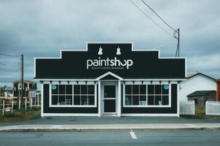

Había una vez un hombre llamado Miguel Adolfo, quien tenía una gran pasión por la construcción y la venta. En el año 1990, decidió abrir una pequeña ferretería en el garaje de su casa, en la hermosa provincia de Mendoza, Argentina. Con el tiempo, su negocio se convirtió en un verdadero punto de referencia para los vecinos de Lujan de Cuyo, gracias a la calidad y variedad de sus productos, así como a la experiencia y el conocimiento de Miguel en el sector de la construcción y bulonería.
Miguel trabajó arduamente para hacer crecer su negocio, y con el tiempo, su ferretería se convirtió en un lugar muy popular entre los vecinos de la zona. La gente confiaba en Miguel para encontrar todo lo que necesitaban para sus proyectos de construcción y reparación, y él siempre estaba allí para ofrecerles la mejor calidad y el mejor servicio posible.
Con el tiempo, Miguel decidió expandir su negocio y fundó Davi Hnos, una ferretería que lleva su apellido y representa su pasión por la construcción y la atencio de venta. Miguel sigue manteniendo la misma dedicación y compromiso con la excelencia que lo ha llevado al éxito.
Hoy en día, Davi Hnos es reconocida por su amplia variedad de productos y por el excelente servicio que ofrece a sus clientes. Si alguna vez necesitas algo para tus proyectos de construcción, jardinería, bulonería, maquinarias de construccion, herrajes de casa, no dudes en visitar la ferretería de Miguel Adolfo Davi en Roque Saenz Peña. ¡Seguro que encontrarás lo que necesitas y más!